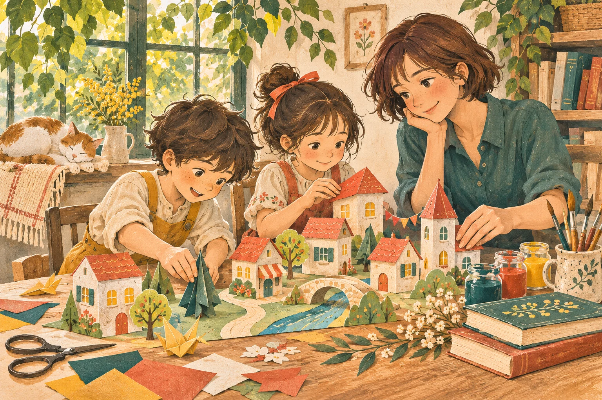

My paper neighbourhood
A bookshop, a park, perhaps a shop for cats. We fold and glue paper houses to make our own neighbourhood.
On the table: Coloured paper, paint and glue
I nurture your child’s curiosity through creative activities, stories and everyday conversation.
Meet Hafsa
One-to-one creative play in and around Kadıköy
 Lovely to meet you.
Lovely to meet you.A sheet of paper can become a neighbourhood. A puppet can inspire a whole story.
I join your child’s curiosity through creative play, stories and everyday conversation. We might make something, follow a story or bring a new language into our play.
I graduated in French Translation and Interpreting from Marmara University (2020–2025). I bring my interest in languages and culture into our games.
Hafsa Karabulut
Let’s have a first conversationMaking things together with paper, colour and everyday materials.
Giving a puppet a voice, a picture a story and a beginning a different ending.
Exploring English and French through colours, greetings and little conversations.
Play and language companionship around your child’s interests, before or after homework.
A little paper, a little colour.
The rest is a world we make together.
We can adapt this play idea together to your child’s interests.
We build our very own neighbourhood together.
“Who lives in this house?”
Let’s talk about this gameA bookshop, a park, perhaps a shop for cats. We fold and glue paper houses to make our own neighbourhood.
On the table: Coloured paper, paint and glue
We make a paper character, give it a voice and create a little scene together.
On the table: Paper, paint and blunt-tip scissors
The next part is ours to imagine. We draw, tell or act out a different ending together.
On the table: Paper and coloured pencils
We look for colours in suitable household objects and discover new words with little clues.
On the table: Age-appropriate everyday objects
Understanding the rules, taking turns and having a break when needed are all part of the game.
On the table: An age-appropriate board game
We bring a few pages together and fill them with our own pictures and words to make a book of our own.
On the table: Paper, paint and thread
We choose materials and ways to join in together, according to your child’s age and interests.
Talking, drawing, making or simply choosing. There is more than one way to join in.
We talk with the family about interests, favourite games and breaks.
We choose materials, make things, tell stories and tidy up together.
We discuss the games, materials and ways of expression your child enjoyed.
We plan the length and rhythm of our time together when we first meet.
We plan activities by discussing your child’s interests and ways of participating. If special education or therapy is needed, we consider together, with guidance from your specialist, whether any play companionship may be suitable.
Families should seek specialist information about learning, attention and movement regulation, communication or sensory needs. This play companionship is not special education, therapy, diagnosis or clinical assessment.
Information for families: Turkish Ministry of Education family resources (2025).
We might say “Bonjour!” as we knock on a paper door, or “It’s your turn!” during a game. English and French can become part of our little stories.
Let’s talk about languagesBonjour !Hello!
Shall we make a story?Shall we make a story?
À toi de jouer !It’s your turn!
Home visits may be arranged with families in Kadıköy, Koşuyolu, Acıbadem, Moda, Üsküdar and nearby areas. We confirm the location and availability when we meet.
There are different play ideas for preschool and school-age children. We discuss the exact age range and suitability for your child in our first conversation.
We talk about interests, daily routines, meeting place, language preferences and family expectations. We also confirm fees, availability and duration.
Once we choose an activity, we agree on the materials and who will prepare them. Age suitability, small parts, scissors and possible allergies are considered together.
We can briefly talk about what we did and the games and forms of expression your child preferred. This is not a clinical or developmental assessment.
Language companionship here focuses on little conversations and everyday expressions within play. If you are looking for separate language lessons, we can discuss that when we meet.
Let’s talk about what your child loves.
And how we could spend time together.
Kadıköy, Koşuyolu, Acıbadem,
Moda, Üsküdar and nearby areas
Let’s confirm fees, availability and duration
during our first conversation.